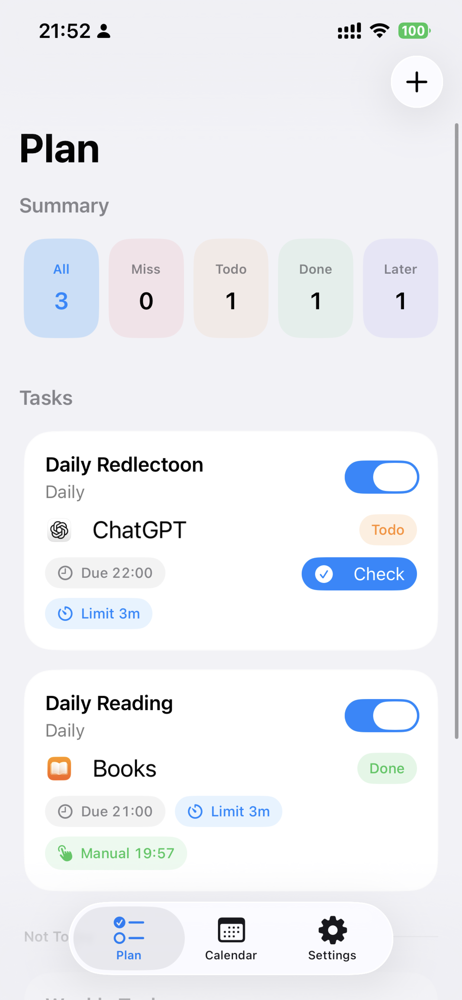
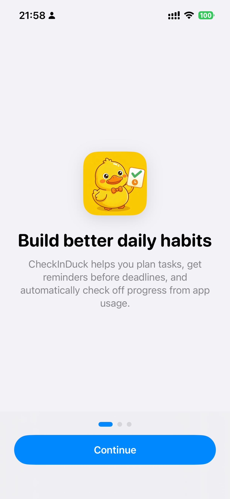
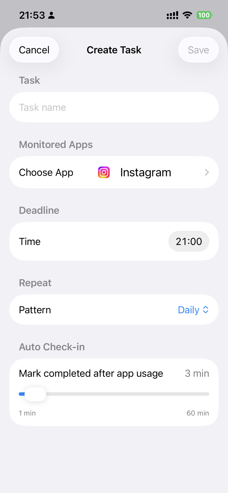
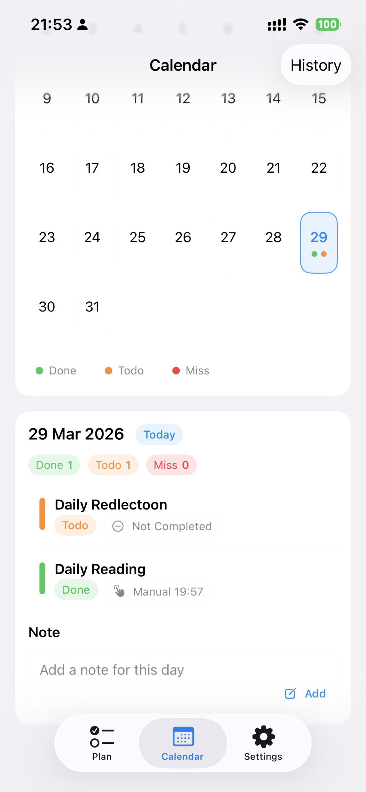
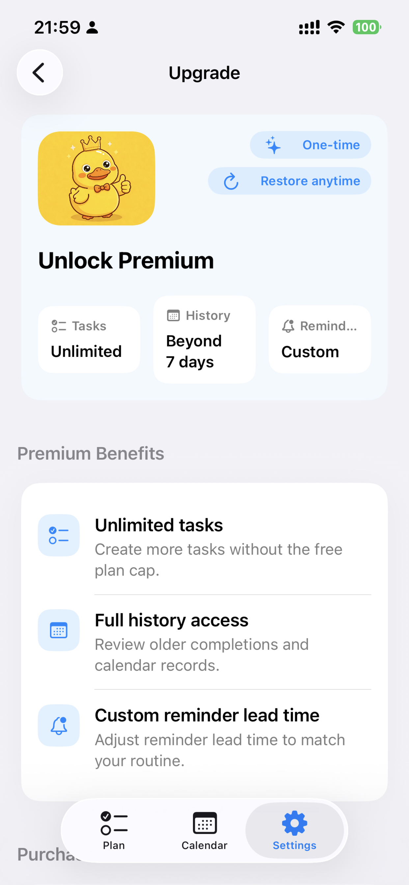

Privacy-first iPhone habit tracker
Build better daily habits with automatic app check-ins.
CheckInDuck helps users create app-based daily tasks, choose a monitored app, set a deadline, and complete the task automatically when the configured usage threshold is reached. Calendar records, reminders, widget status, and premium upgrades are all built into the current app.
- Uses Screen Time and Family Controls only after explicit user authorization
- Supports reminders, widget status, and calendar-based progress review
- Premium unlocks unlimited tasks, full history, and custom reminder timing


How it works
A clear flow from permission to completion.
The current build is centered on user-controlled habit tasks. People choose what to monitor, when the task should be due, and how the app should remind them before the deadline.
Authorize and choose
During onboarding, users can enable notifications and Family Controls access, then pick the app that should count toward a task.
Set task rules
Each task includes a name, monitored app, daily deadline, repeat rule, and auto check-in threshold measured in minutes.
Review progress
The app updates status automatically, shows progress in the widget and calendar, and keeps daily records for follow-up.
Current features
Aligned with the app that exists today.
These sections are based on the current iOS project, including the task flow, calendar records, settings, widget support, and StoreKit-powered premium upgrade path.
Task dashboard
Daily tasks can be filtered by status and manually checked when needed, with a focused list for what still needs action today.
Auto check-in threshold
Tasks can complete automatically after the selected app reaches the configured daily usage limit.
Reminder scheduling
Notifications can remind users before the deadline, including a deadline-time reminder path in the app.
Calendar and notes
A calendar view summarizes completed, pending, and missed days, with per-day details and notes.
Widget status
Home Screen widgets surface today's habit status without requiring users to open the app first.
Premium upgrade
Premium currently unlocks unlimited tasks, full history access, and custom reminder lead time, with purchase and restore flows.
Screens
Real product screenshots from the current app flow.
The gallery below covers onboarding, widget state, task planning, task creation, calendar review, and the premium upgrade screen.
Onboarding
Introduces the habit loop and permission flow.
Widget
Shows task status directly on the Home Screen.
Task dashboard
Summaries, task states, and one-tap check-ins.

Create task
Configure the monitored app, deadline, and auto check-in rule.

Calendar review
Review daily outcomes, task details, and notes.

Premium
Purchase and restore flows for the expanded feature set.
Privacy and permissions
Explicit authorization, narrow monitoring scope.
CheckInDuck is built for personal habit tracking. It relies on Apple's permission model and only evaluates app-usage thresholds for apps the user chooses.
- Users decide whether to enable notifications and Family Controls access.
- Only user-selected apps are included in a task.
- Task completion is based on daily usage thresholds, not in-app content.
- The app does not read messages, taps, typed text, or screen contents inside other apps.
- Task records, notes, and shared widget state are stored for the app experience.
- Purchases are handled through Apple StoreKit, and optional in-app feedback can send the user's submitted message to the developer.
Review note
The app is positioned as a self-management product, not a surveillance or hidden tracking tool.
FAQ
Short answers to the key questions.
What does the app monitor?
It only evaluates usage thresholds for apps the user explicitly selected for a task.
Can it read activity inside other apps?
No. CheckInDuck does not inspect text, content, taps, messages, or any hidden in-app behavior.
What does premium unlock?
Premium unlocks unlimited tasks, history beyond the free window, and custom reminder lead times.
How can users get help?
Support, privacy questions, and billing issues can all be sent to wrq142857@gmail.com.